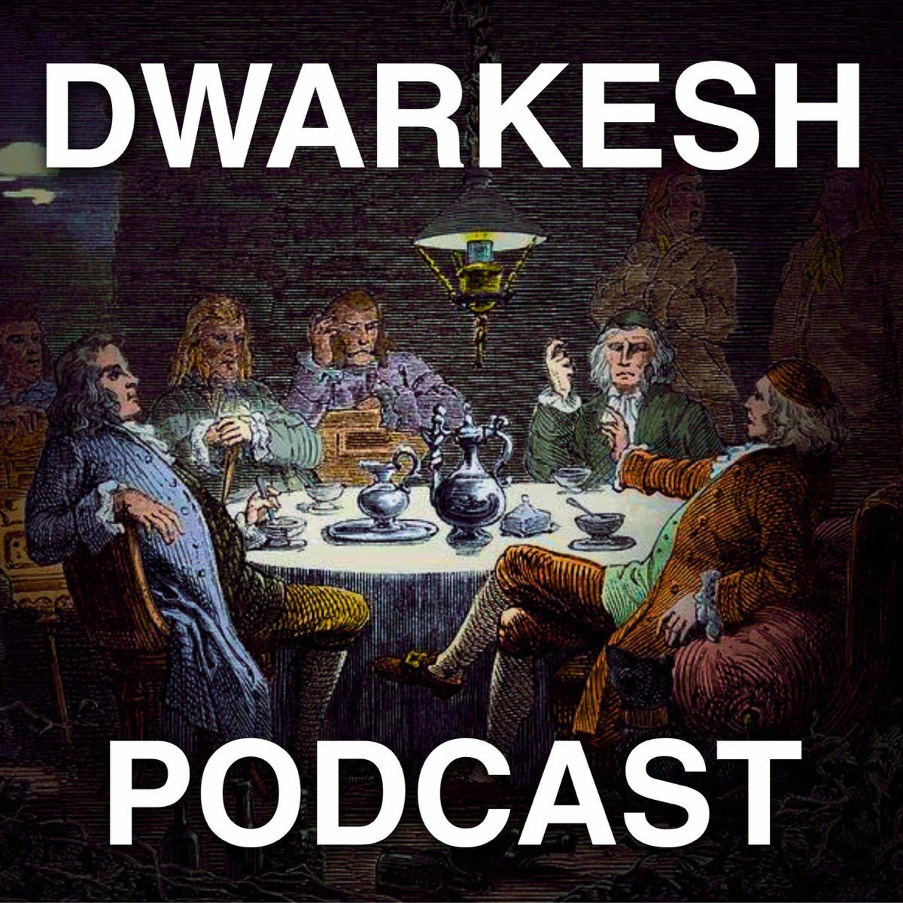
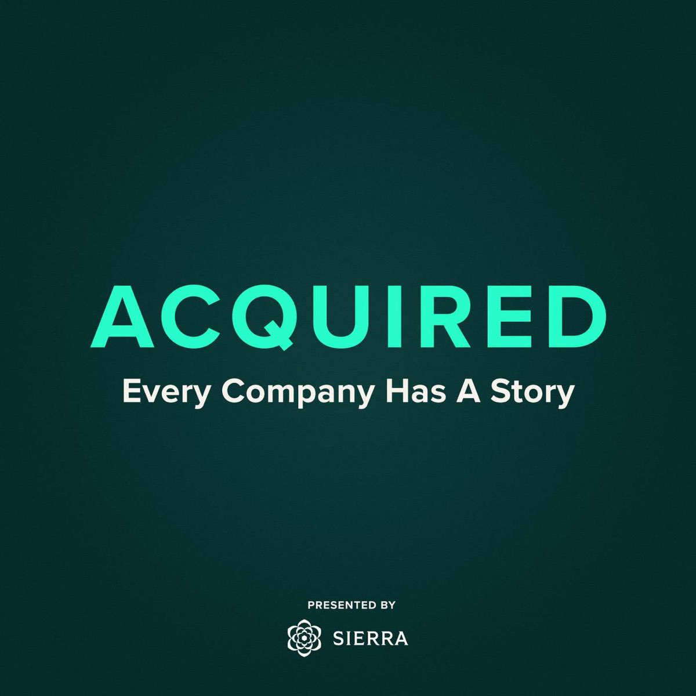
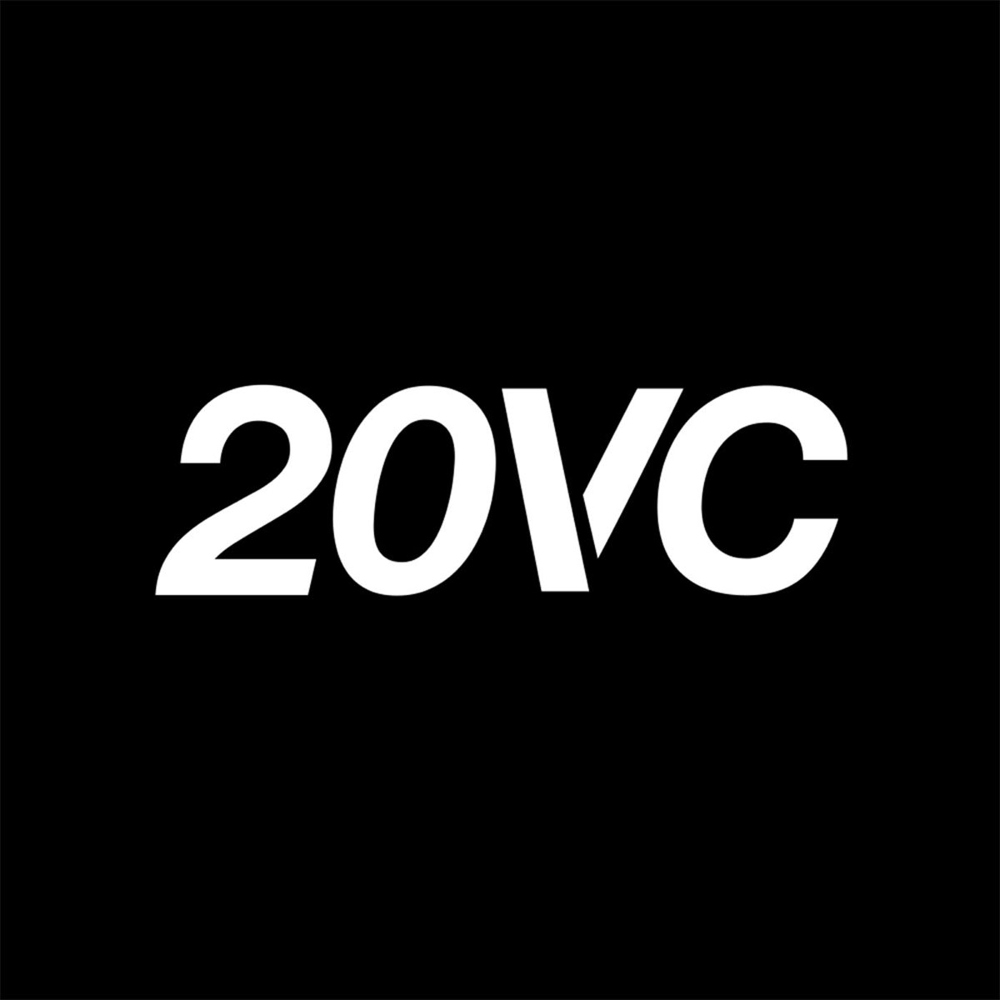
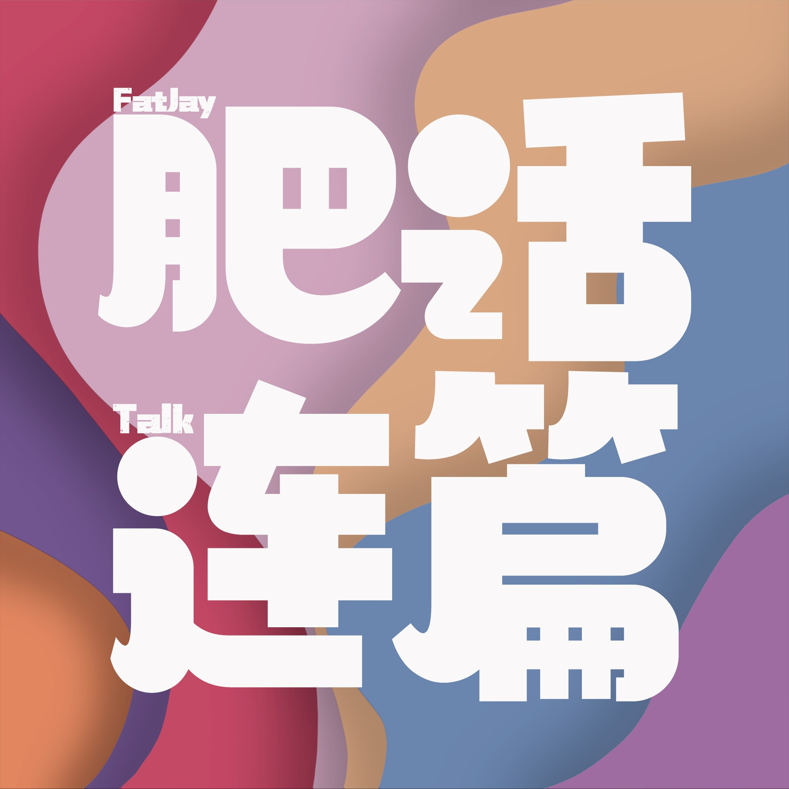
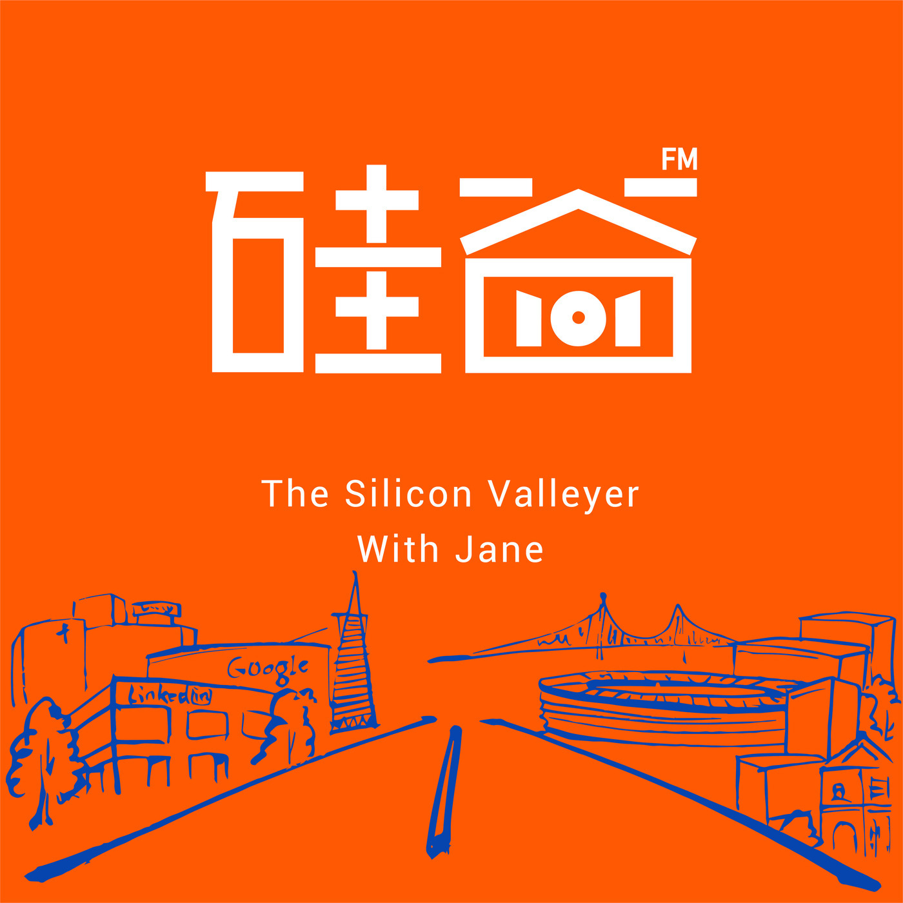

Dwarkesh Podcast
从 AI、科学与经济一路追问到文明未来。研究密度高， 却保留真正对话的开放感。
Deeply researched interviews 去收听Curated listening 中英双语 / 08 selected


Three signals from the index
为什么是这 8 档
这份索引从人工智能、商业史和风险投资，走到家庭财富与普通生活。 共同点不是题材，而是愿意把一个问题追到底。
有些节目给你新的事实，有些给你更好的问题。 Loading Vibe 把它们放在同一张桌上，方便你按当下的好奇心开始。
Eight voices / four territories
按主题筛选，或者直接从封面出发。每个入口都会带你回到节目的原始平台。
08 shows in view
External links open in a new tab ↗
从 AI、科学与经济一路追问到文明未来。研究密度高， 却保留真正对话的开放感。
Deeply researched interviews 去收听
快节奏、直接而有能量。顶尖创始人与投资人谈融资、战略、领导力， 也谈他们最不温和的判断。
Venture capital, without the polish 去收听用数小时讲透一家伟大公司如何长成：完整历史、商业模式、 竞争优势与那些决定命运的选择。
Every company has a story 去收听从家庭财富、房产与投资出发，讨论中国中产的现实选择、 中年的精神出口和大城市的未来。
Money decisions, lived in public 去收听
肥杰和惠子把关系、工作、吃喝旅行与日常烦恼聊成笑声。 像坐在两位老朋友旁边，轻松但不空泛。
A warm, funny seat at the table 去收听对流行观点多问几个“为什么”。把投资、住房、科技与人生阶段， 还原成普通人能够独立判断的问题。
Ask why before following the crowd 去收听
通过科学家、创业者与投资人的深度访谈， 解释 AI、半导体、机器人等新技术如何工作，又将改变什么。
Fresh technology, explained in context 去收听两位投资人与一线实践者聊 AI、SaaS、开源、产品增长和全球化， 把投资框架落到真实的公司建设过程。
From first idea to global company 去收听No signal found
A note before you press play
Good conversations do not save time. They make the time worth spending.
回到页首